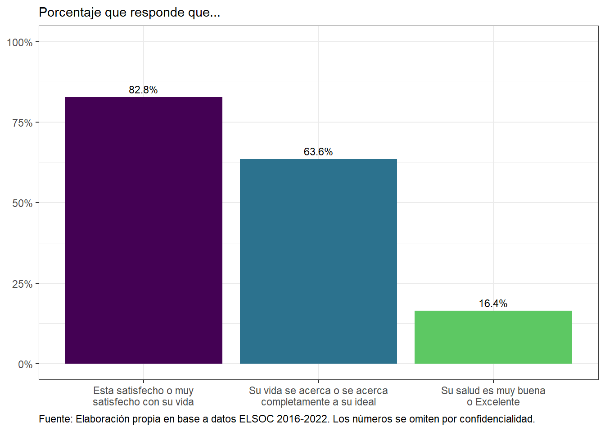
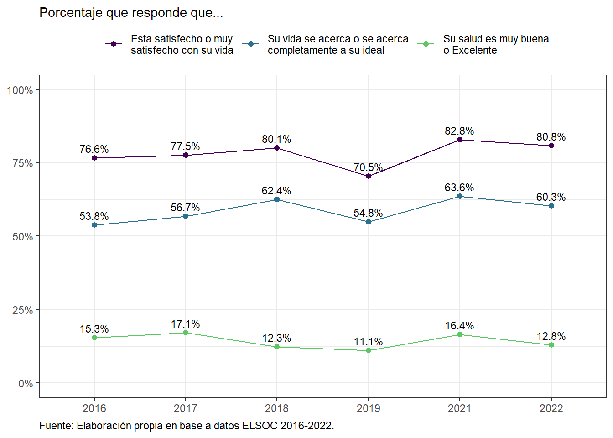
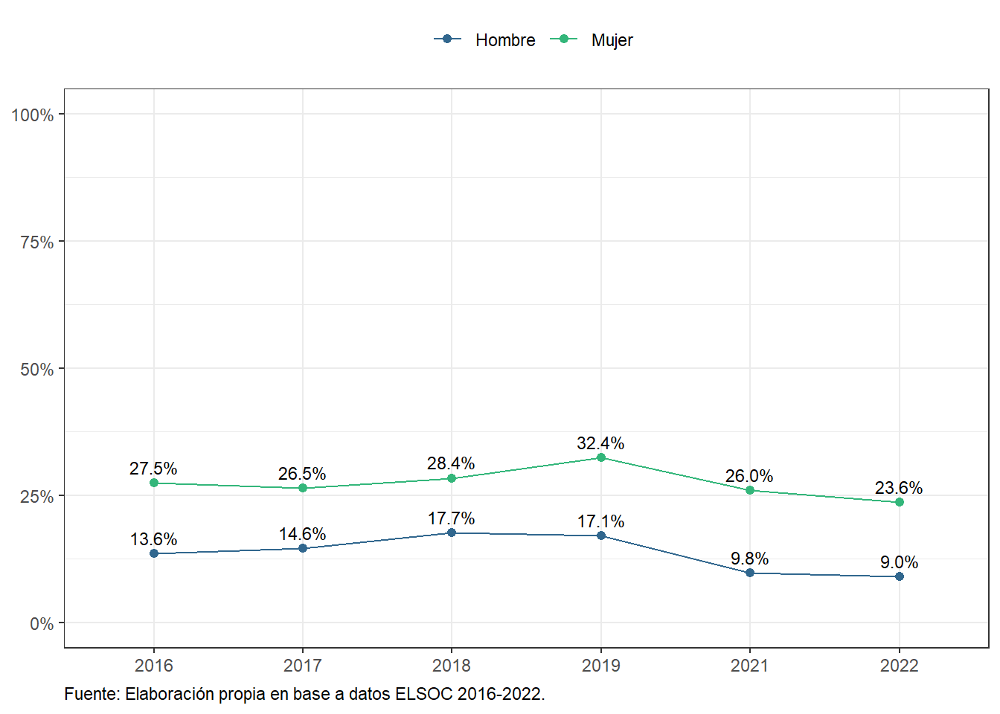
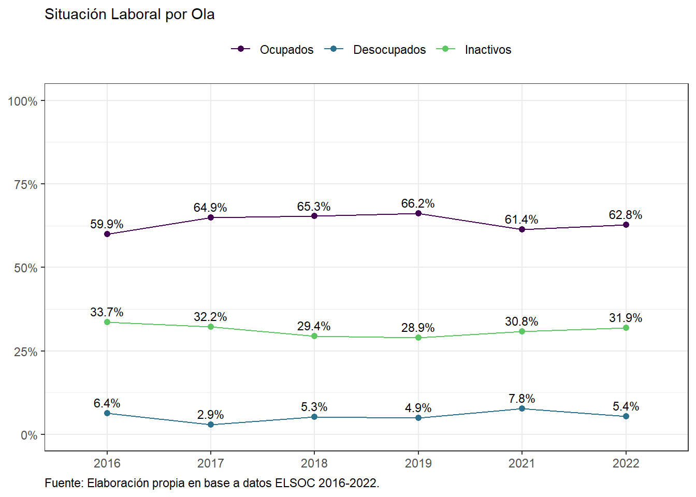

0.0.1 Bienestar (nombre temporal)
rm(list=ls())
library(knitr)
library(tidyverse)
library(sjmisc)
library(sjlabelled)
library(ggrepel)
library(ggalluvial)
library(survey)
library(elsoc)
library(lubridate)
library(viridis)
library(statar)elsoc_long_2016_2022<- readRDS("../inputs/Bienestar/base_bienestar.RDS")0.0.2 Salud Mental y Bienestar
elsoc_long_2016_2022 %>%
filter(tipo_atricion == 1 & ola ==5) %>%
drop_na(s01,s02,s03)%>%
prop_list(s01 %in% 4:5, s02 %in% 4:5, s03 %in% 4:5, na.rm = TRUE) %>%
mutate(name = factor(name,
levels = c('s01 %in% 4:5', 's02 %in% 4:5', 's03 %in% 4:5'),
labels = c('Esta satisfecho o muy\nsatisfecho con su vida',
'Su vida se acerca o se acerca\ncompletamente a su ideal',
'Su salud es muy buena\no Excelente'))) %>%
ggplot(aes(y = prop, x = name, fill = name,
label = scales::percent(prop, accuracy = .1))) +
theme_bw() +
geom_col() +
geom_text(position = position_dodge(.9),
vjust = -.5, size = 3) +
scale_y_continuous(labels = scales::percent, limits = c(0,1)) +
ylab(label = NULL) +
xlab(label = NULL) +
scale_fill_viridis_d(end = .75, option = 'viridis') +
theme(plot.caption = element_text(hjust = 0),
legend.position = 'none') +
ggtitle(NULL, 'Porcentaje que responde que...') +
labs(caption = 'Fuente: Elaboración propia en base a datos ELSOC 2016-2022. Los números se omiten por confidencialidad.')

Figura 1: Satisfacción con la vida, ideal de vida y salud subjetiva (ola 2022)
# elsoc::load_elsoc('long')
elsoc_long_2016_2022 %>%
filter(tipo_atricion == 1) %>%
drop_na(s01,s02,s03)%>%
sjlabelled::as_label(ola) %>%
prop_list(s01 %in% 4:5, s02 %in% 4:5, s03 %in% 4:5, by = ola, na.rm = TRUE) %>%
mutate(name = factor(name,
levels = c('s01 %in% 4:5', 's02 %in% 4:5', 's03 %in% 4:5'),
labels = c('Esta satisfecho o muy\nsatisfecho con su vida',
'Su vida se acerca o se acerca\ncompletamente a su ideal',
'Su salud es muy buena\no Excelente'))) %>%
ggplot(aes(y = prop, x = ola, group = name, color = name,
label = scales::percent(prop, accuracy = .1))) +
theme_bw() +
geom_point(size = 1.75) +
geom_line() +
geom_text_repel(nudge_y = .025, size = 3, color = 'black') +
scale_y_continuous(labels = scales::percent, limits = c(0,1)) +
ylab(label = NULL) +
xlab(label = NULL) +
scale_color_viridis_d(end = .75, option = 'viridis') +
theme(plot.caption = element_text(hjust = 0),
legend.position = 'top',
legend.title = element_blank()) +
ggtitle(NULL, 'Porcentaje que responde que...') +
labs(caption = 'Fuente: Elaboración propia en base a datos ELSOC 2016-2022.')

Figura 2: Satisfacción con la vida, ideal de vida y salud subjetiva, según ola
elsoc_long_2016_2022 %>%
filter(tipo_atricion == 1, ola == 5) %>%
prop(depr, na.rm = TRUE) %>%
ggplot(aes(y = prop, x = depr, fill = depr,
label = scales::percent(prop, accuracy = .1))) +
theme_bw() +
geom_col(position = 'dodge2') +
scale_y_continuous(labels = scales::percent, limits = 0:1) +
ylab(label = NULL) +
xlab(label = NULL) +
ggtitle("Porcentaje que presenta síntomas depresivos ")+
scale_fill_viridis_d(begin = 0, end = .85, direction = -1) +
geom_text(position = position_dodge2(.9),
size = 3,
vjust = -.5) +
theme(plot.caption = element_text(hjust = 0),
legend.position = 'none') +
labs(caption = 'Fuente: Elaboración propia en base a datos ELSOC 2016-2022.')
Figura 3: Porcentaje que presenta síntomas de depresión (2022)
# elsoc::load_elsoc('long')
elsoc_long_2016_2022 %>%
filter(ola == 6,!is.na(salida)) %>%
prop(depr, by = c(salida), na.rm = TRUE) %>%
sjlabelled::as_label(depr, salida) %>%
ggplot(aes(y = prop, x = salida, fill = fct_rev(depr),
label = scales::percent(prop, accuracy = .1))) +
theme_bw() +
geom_col(position = 'Stack') +
scale_y_continuous(labels = scales::percent) +
ylab(label = NULL) +
xlab(label = NULL) +
scale_fill_viridis_d(begin = 0, end = .85, option = 'viridis') +
geom_text(position = position_stack(vjust = .5),
size = 3,
color = rep(rep(c('black', 'white'), each = 2), 3)) +
theme(plot.caption = element_text(hjust = 0),
legend.position = 'top',
legend.title = element_blank()) +
guides(fill = guide_legend(reverse = TRUE)) +
labs(caption = 'Fuente: Elaboración propia en base a datos ELSOC 2016-2022.')## 2 cases with missing weights. Droped from survey design.
Figura 4: Porcentaje que presenta síntomas de depresión, según voto en plebiscito
# elsoc::load_elsoc('long')
elsoc_long_2016_2022 %>%
dplyr::filter(tipo_atricion == 1) %>%
prop(phq9 >= 10 , by = c(ola, m0_sexo), na.rm = TRUE) %>%
sjlabelled::as_label(ola, m0_sexo) %>%
ggplot(aes(y = prop, x = ola, color = m0_sexo, group = m0_sexo,
label = scales::percent(prop, accuracy = .1))) +
theme_bw() +
geom_point(size = 1.75) +
geom_line() +
geom_text_repel(nudge_y = .025, size = 3, color = 'black') +
scale_y_continuous(labels = scales::percent, limits = 0:1) +
ylab(label = NULL) +
xlab(label = NULL) +
scale_color_viridis_d(begin = .33, end = .66) +
theme(plot.caption = element_text(hjust = 0),
legend.position = 'top',
legend.title = element_blank()) +
labs(caption = 'Fuente: Elaboración propia en base a datos ELSOC 2016-2022.')

Figura 5: Porcentaje que presenta síntomas de depresión moderados a severos, según sexo y ola
0.0.3 Seguridad Económica y Laboral
elsoc_long_2016_2022 %>%
filter(tipo_atricion == 1, !is.na(m02)) %>%
mutate(sit_laboral = factor(car::recode(m02, "1:3 = 1; 6 = 2; c(4,5,7,8,9) = 3"),
levels = 1:3)) %>%
sjlabelled::as_label(ola) %>%
prop_list(sit_laboral==1, sit_laboral==2, sit_laboral==3, by = ola, na.rm = TRUE) %>%
mutate(name = factor(name,
levels = c('sit_laboral == 1', 'sit_laboral == 2', 'sit_laboral == 3'),
labels = c('Ocupados',
'Desocupados',
'Inactivos'))) %>%
ggplot(aes(y = prop, x = ola, group = name, color = name,
label = scales::percent(prop, accuracy = .1))) +
theme_bw() +
geom_point(size = 1.75) +
geom_line() +
geom_text_repel(nudge_y = .025, size = 3, color = 'black') +
scale_y_continuous(labels = scales::percent, limits = c(0,1)) +
ylab(label = NULL) +
xlab(label = NULL) +
scale_color_viridis_d(end = .75, option = 'viridis') +
theme(plot.caption = element_text(hjust = 0),
legend.position = 'top',
legend.title = element_blank()) +
ggtitle(NULL, 'Situación Laboral por Ola') +
labs(caption = 'Fuente: Elaboración propia en base a datos ELSOC 2016-2022.')

Figura 6: Situación Laboral, evolución histórica
# elsoc::load_elsoc('long')
elsoc_long_2016_2022 %>%
mutate(ola = ifelse(ola==1,"2016",
ifelse(ola==6,"2022",ola))) %>%
filter(ola==2016|ola==2022,muestra==1,!is.na(salida),!is.na(sit_laboral)) %>%
prop(salida, by = c(ola,sit_laboral), na.rm = TRUE) %>%
sjlabelled::as_label(salida, sit_laboral) %>%
ggplot(aes(y = prop, x = sit_laboral, fill = fct_rev(salida),
label = scales::percent(prop, accuracy = .1))) +
theme_bw() +
geom_col(position = 'Stack') +
scale_y_continuous(labels = scales::percent) +
ylab(label = NULL) +
xlab(label = NULL) +
scale_fill_viridis_d(begin = 0, end = .85, option = 'viridis') +
geom_text(position = position_stack(vjust = .5),
size = 3) +
theme(plot.caption = element_text(hjust = 0),
legend.position = 'top',
legend.title = element_blank()) +
guides(fill = guide_legend(reverse = TRUE)) +
facet_grid(~ola) +
labs(caption = 'Fuente: Elaboración propia en base a datos ELSOC 2016-2022.') 
Figura 7: Situación Laboral, según voto en plebiscito